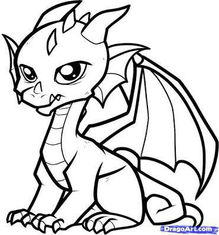

This is The DRAGON

A dragon is a legendary creature, typically scaled or fire-spewing and with serpentine, reptilian or avian traits, that features in the myths of many cultures around world. The two most well-known cultural traditions of dragon are
The European dragon, derived from European folk traditions and ultimately related to Balkans and Western Asian mythologies. Most are depicted as reptilian creatures with animal-level intelligence, and are uniquely six-limbed (four legs and a separate set of wings).
The Chinese dragon, with counterparts in Japan (namely the Japanese dragon), Korea and other East Asian and South Asian countries.[1] Most are depicted as serpentine creatures with above-average intelligence, and are quadrupeds (four legs and wingless).
The two traditions may have evolved separately, but have influenced each other to a certain extent, particularly with the cross-cultural contact of recent centuries. The English word dragon and Latin word draco derive from Greek δράκων (drákōn), "dragon, serpent of huge size, water-snake".[2]
Despite the verbal similarity, the term "Draconian" does not refer to Dragons, but to the Athenian law scribe Draco.
Contents
1 Overview
1.1 Etymology
1.2 Morphology
1.3 Comparative mythology
1.4 Cartography
1.5 Animals that may have inspired dragons
2 Historical European dragons
2.1 Southern Europe
2.2 Eastern Europe
3 Historical Asian dragons
3.1 South Asia
3.2 West Asia
3.3 East Asia
4 Modern depictions
5 See also
6 References
7 Further reading
8 External links
Overview
Etymology
Metal Asian dragon
The word dragon entered the English language in the early 13th century from Old French dragon, which in turn comes from Latin draconem (nominative draco) meaning "huge serpent, dragon", from the Greek word δράκων, drakon (genitive drakontos, δράκοντος) "serpent, giant seafish". The Greek and Latin term referred to any great serpent, not necessarily mythological, and this usage was also current in English up to the 18th century.
Morphology
A dragon is a mythological representation of a reptile. In antiquity, dragons were mostly envisaged as serpents. Since the Middle Ages, however, it has become common to depict dragons with legs, resembling a lizard.
Dragons are usually shown in modern times with a body like a huge lizard, or a snake with two pairs of lizard-type legs, and able to emit fire from their mouths. The European dragon has bat-like wings growing from its back. A dragon-like creature with wings but only a single pair of legs is known as a wyvern.
There is a modern tendency to depict dragons with back legs only and using their wings (walking on the carpal joints) as front legs, as it is thought that pterosaurs did. An example is Smaug as depicted in the film version of The Hobbit by Tolkien.
Comparative mythology
Further information: Chaoskampf, Sea serpent, Proto-Indo-European religion § Dragon or Serpent, and Serpent (Bible)
The association of the serpent with a monstrous opponent overcome by a heroic deity has its roots in the mythology of the Ancient Near East, including Canaanite (Hebrew, Ugaritic), Hittite and Mesopotamian. Humbaba, the fire-breathing dragon-fanged beast first described in the Epic of Gilgamesh, is sometimes described as a dragon with Gilgamesh playing the part of dragon-slayer.[3] Samuel Noah Kramer, in his book Sumerian Mythology, interprets the myths involving the slaying of the Kur by Enki, Ninurta, and Inanna as dragon-slaying myths.[4]
Greek red-figure vase painting depicting Heracles slaying the Lernaean hydra, c. 375-340 BC
The story of a hero slaying a giant serpent occurs in nearly every Indo-European mythology.[5] In most stories, the hero is some kind of thunder-god. Examples include Indra, who, according to the Rigveda, slew the serpent Vritra, Zeus, who, according to Hesiod's Theogony, slew the serpent Typhon, and Thor, who, according to the Eddas, slew the Midgard serpent.[6] In nearly every iteration of the story, the serpent is either multi-headed or "multiple" in some other way.[5] The Lernaean Hydra, slain by Heracles, had nine heads. Hesiod describes Typhon as having one hundred heads. Vritra too is also described as multi-headed. Furthermore, in nearly every story, the serpent is always somehow associated with water. The Hydra was said to reside in the swamps of Lerna and the name "hydra" itself means "water." The Midgard Serpent was said to live in the water around Midgard and Vritra was the cause of drought.[7] The later folklore motif of the dragon guarding gold may have come from earlier Bronze Age customs of introducing serpents to village granaries to deter rats or mice.[3]
Saint George Killing the Dragon, 1434/35, by Martorell
Coat of arms of the Hungarian House of Lacković
Although dragons occur in many legends around the world, different cultures have varying stories about monsters that have been grouped together under the dragon label. Some dragons are said to breathe fire or to be poisonous, such as in the Old English poem Beowulf. They are commonly portrayed as serpentine or reptilian, hatching from eggs and possessing typically scaly or feathered bodies. They are sometimes portrayed as hoarding treasure. Some myths portray them with a row of dorsal spines. European dragons are more often winged, while Chinese dragons resemble large snakes. Dragons can have a variable number of legs: none, two, four, or more when it comes to early European literature.
Dragons are often held to have major spiritual significance in various religions and cultures around the world. In many Asian cultures, dragons were, and in some cultures still are, revered as representative of the primal forces of nature, religion, and the universe. They are associated with wisdom—often said to be wiser than humans—and longevity. They are commonly said to possess some form of magic or other supernatural power, and are often associated with wells, rain, and rivers. In some cultures, they are also said to be capable of human speech. In some traditions dragons are said to have taught humans to talk.
The Order of the Dragon was created to defend Europe against the invading Ottoman Turks in the 15th century.
Narratives about dragons often involve their being killed by a hero. This topos can be traced to the Chaoskampf of the mythology of the Ancient Near East (e.g. Hadad vs. Yam, Marduk vs. Tiamat, Teshub vs. Illuyanka, etc.; the Biblical Leviathan presumably reflects a corresponding opponent of an early version of Yahweh). The motif is continued in Greek Apollo, and the early Christian narratives about Michael the Archangel and Saint George. The slaying of Vrtra by Indra in the Rigveda also belongs in this category. The theme survives into medieval legend and folklore, with dragon slayers such as Beowulf, Sigurd, Tristan, Margaret the Virgin, Heinrich von Winkelried, Dobrynya Nikitich, Skuba Dratewka/Krakus. In the Bible, the archetype is alluded to in the descendants of Adam crushing the head of the Serpent, and in Christian mythology, this was interpreted as corresponding to Christ as the Last Adam crushing the Devil.
The blood of a slain dragon is depicted as either beneficent or as poisonous in medieval legend and literary fiction. In German legend, dragon blood has the power to render invincible skin or armor bathed in it, as is the case with Siegfried's skin or Ortnit's armor. In the Slavic myth, the Earth refuses it as being so vile that Mother Earth wishes not to have it within her womb, and it remains above ground for all eternity. The blood of the dragon in Beowulf has acidic qualities, allowing it to seep through iron. Heinrich von Winkelried dies after the blood of the dragon slain by him accidentally drips on him.
Cartography
There is a widespread belief that earlier cartographers used the Latin phrase hic sunt dracones, i.e., "the dragons are here", or "here be dragons", to denote dangerous or unexplored territories, in imitation of the infrequent medieval practice of putting sea serpents and other mythological creatures in the blank areas of maps. However, the only known use of this exact phrase is in the Latin form "HC SVNT DRACONES" on the Lenox Globe (ca. 1503–07).[8]
Another map that contains dragons is the one of Swedish bishop Olaus Magnus. The 1539 Carta Marina map of Scandinavia has many monsters in the North Sea and Norwegian Sea, as well as a winged, bipedal, predatory land animal resembling a dragon in northern Lapland.
Animals that may have inspired dragons
Nile crocodile
It has been speculated that accounts of spitting cobras may be the origin of the myths of fire-breathing dragons.[9]
Nile crocodiles, today very restricted in range, were in ancient times occasionally found in Southern Europe, having swum across the Mediterranean. Such wayward crocodiles may have inspired dragon myths.[10][11] Skeletons of whales, as well as dinosaur and mammalian fossils may have been occasionally mistaken for the bones of dragons and other mythological creatures; for example, a discovery in 300 BC in Wucheng, Xingwen County, Sichuan, China, was labeled as such by Chang Qu.[10][12] Adrienne Mayor has written on the subject of fossils as the inspiration for myths in her book The First Fossil Hunters,[13] and in an entry in the Encyclopedia of Geology she wrote: "Fossil remains generated a variety of geomyths speculating on the creatures' identity and cause of their destruction. Many ancient cultures, from China and India to Greece, America, and Australia, told tales of dragons, monsters, and giant heroes..."[14]
Komodo dragon
In Australia, stories of such creatures may have referred to the land crocodiles, Quinkana sp., a terrestrial crocodile which grew to 5 to possibly 7 metres long, or the monitor lizard Varanus priscus (formerly Megalania prisca) a giant carnivorous goanna that might have grown to 7 metres (23 ft), and weighed up to 1,940 kilograms (4,280 lb), or rainbow serpents (possibly Wonambi naracoortensis) that were part of the extinct megafauna of Australia.[15] Today the Komodo monitor lizard Varanus komodoensis is known in English as the Komodo dragon.
In the book An Instinct for Dragons[16] anthropologist David E. Jones suggests a hypothesis that humans just like monkeys have inherited instinctive reactions to snakes, large cats and birds of prey. Dragons have features that are combinations of these three. An instinctive fear for these three would explain why dragons with similar features occur in stories from independent cultures on all continents.
In Slovenia, Johann Weikhard von Valvasor compiled folk stories on the Olm, a subterranean salamander, in The Glory of the Duchy of Carniola. It is mentioned as a baby dragon. Heavy rains of Slovenia would wash the olms up from their subterranean habitat, giving rise to the folk belief that great dragons lived beneath the Earth's crust, and the olms were the undeveloped offspring of these mythical beasts.[17]
Historical European dragons
A dragon illustration in a 1460 edition of the Medieval Liber Floridus
Main articles: European dragon, Welsh Dragon, Wyvern, Saint George and the Dragon, Margaret the Virgin, and Dacian Draco
European dragons exist in folklore and mythology among the overlapping cultures of Europe. Dragons are generally depicted as living in rivers or having an underground lair or cave.[10] They are commonly described as having hard or armoured hide, and are rarely described as flying, despite often being depicted with wings.
Y Ddraig Goch (The red dragon) is used on the Welsh flag, the dragon has ancient origins, said to have been flown by Uther Pendragon & King Arthur.
European dragons are usually depicted as malevolent under Christianity; pre-Christian dragons, such as Y Ddraig Goch, the Red Dragon of Wales, are seen as benevolent. Banners of the Late Roman Empire frequently figured Dragons, possibly due to the fact that Marcus Aurelius took over 8,000 Sarmatian soldiers into the Roman army, for whom the Dragon was a part of their military insignia. The double-headed dragon banner thus came to represent the division between Western and Eastern Roman Empires. It has been suggested that the Welsh legendary name Pendragon came from the word "head of the dragons", the name of the commander of the Sarmatians situated in sub-Roman Ribchester. Pagan sacred sites and springs, supposedly associated with Dragons, were often later associated with churches of Saint Michael or Saint George.
The Lusignan family of nobility in France is said to have descended from the union of a count with the Lady Melusine, who married him on condition that he did not spy on her bathing. The count violated her privacy, whereupon she changed into a dragon and flew away never to be seen again. The city of Ljubljana has adopted dragons as a symbol as a result of the dynastic connection of its former ruling family with the Lusignan family of Melusine.
Golden dragon in Den Bosch
Southern Europe
Greek dragon
Main article: Dragons in Greek mythology
Ancient Greek mosaic from Caulonia, Italy, depicting a cetus or sea-dragon
In ancient Greece, the first mention of a "dragon" is derived from the Iliad where Agamemnon is described as having a blue dragon motif on his sword belt and an emblem of a three-headed dragon on his breast plate.[18] However, the Greek word used (δράκων drákōn, genitive δράκοντοϛ drákontos) could also mean "snake".[19]
In 217 AD, Flavius Philostratus (Greek: Φλάβιος Φιλόστρατος)[20] discussed dragons (δράκων, drákōn) in India in The Life of Apollonius of Tyana (II,17 and III,6–8). The Loeb Classical Library translation (by F.C. Conybeare) mentions (III,7) that "In most respects the tusks resemble the largest swine's, but they are slighter in build and twisted, and have a point as unabraded as sharks' teeth."
According to a collection of books by Claudius Aelianus (Greek: Κλαύδιος Αἰλιανός)[21] called On Animals, Ethiopia was inhabited by a species of dragon that hunted elephants and could grow to a length of 180 feet (55 m) with a lifespan rivaling that of the most enduring of animals.[22]
Eastern Europe
Slavic dragon
Zmey Gorynych, the Russian three-headed dragon
"Dragon Family" in Varna, Bulgaria
Main article: Slavic dragon
In Slavic mythology, the words "zmey", "zmiy" or "zmaj" are used to describe dragons. These words are masculine forms of the Slavic word for "snake", which are normally feminine (like Russian zmeya). In Romania, there is a similar figure, derived from the Slavic dragon and named zmeu. Exclusively in Polish and Belarusian folklore, as well as in the other Slavic folklores, a dragon is also called (variously) смок, цмок, or smok. In South Slavic folklores, the same thing is also called lamya (ламйа, ламjа, lamja). Although quite similar to other European dragons, Slavic dragons have their peculiarities.
Russian dragons usually have heads in multiples of three. Some have heads that grow back if every single head is not cut off. In Ukraine and Russia, a particular dragon-like creature, Zmey Gorynych, has three heads and spits fire. According to one bylina, Zmey Gorynych was killed by bogatyr Dobrynya Nikitich.
Other Russian dragons (such as Tugarin Zmeyevich) have Turkic names, probably symbolizing the Mongols and other nomadic steppe peoples. Accordingly, St George (symbolizing Christianity) killing the Dragon (symbolizing Satan) is represented on the coat of arms of Moscow. Some prehistoric structures, notably the Serpent's Wall near Kiev, have been associated with dragons.
Armenian dragon
Main article: Vishap
Statue of the Armenian god Vahagn the Dragon Slayer choking a dragon in Yerevan, Armenia
Main article: Vahagn
Historical Asian dragons
South Asia
Indian dragon
In the early Vedic religion, Vritra (Sanskrit: वृत्र (Devanāgarī) or Vṛtra (IAST)) "the enveloper", was a dragon or a "naga" (serpent) (Sanskrit: नाग)[23] or possibly dragon-like creature, the personification of drought and enemy of Indra. Vritra was also known in the Vedas as Ahi ("snake") (Sanskrit: अहि),[24] and he is said to have had three heads. In later Puranic mythology he came to be identified with an Asura.
The Life of Apollonius of Tyana by Flavius Philostratus:[25] contains a long detailed description of India heavily infested with dragons, but this does not correspond with modern Indian belief, and likely not with Indian belief as it was in his time, whether Apollonius invented this story, or whether he believed someone else who told him it.
Assam, India
In Assam, dragon symbols are used in the Assamese Culture. Generally, dragons motifs are made for religious purposes. Such motifs are placed along the mukut in Naamghars. Dragons with a lion body are placed on the top of the gates of these Naamghars, which symbolises that they guard the ghar. Dragon Symbols are also used in clothes. Such dragon was engraved in the seal of Ahom kingdom of Assam.
Dragon motifs atop the gateway to the Maidam of Assamese general Brave Lachit Phukan Lung
Manipur, India
Main article: Pakhangba
Pakhangba is a mythical hybrid dragon of Manipur which originated in an ancient deity of the Meitei people preceding Hinduism in the region. It was the traditional heraldic emblem of the Princely state of Manipur.[26] A Pakhangba is a dragon with deer antlers. It usually has the body of a snake, but in some sculptures at the Kangla Palace in Imphal, it is represented with a short body and four sturdy legs, looking more like a lion.[27]
Bhutan dragon
Main article: Druk
The Druk (Dzongkha: འབྲུག་), also known as 'Thunder Dragon', is one of the National symbols of Bhutan. In the Dzongkha language, Bhutan is known as Druk Yul "Land of Druk", and Bhutanese leaders are called Druk Gyalpo, "Thunder Dragon Kings". The druk was adopted as an emblem by the Drukpa Lineage, which originated in Tibet and later spread to Bhutan.[28]
West Asia
Persian dragon
Main article: Azhdaha
15th-century Persian miniature of Rostam slaying a dragon
Aži Dahāka is the source of the modern Persian word azhdahā or ezhdehā اژدها (Middle Persian azdahāg) meaning "dragon", often used of a dragon depicted upon a banner of war. The Persians believed that the baby of a dragon will be the same color as the mother's eyes. Several other dragons and dragon-like creatures, all of them malevolent, are mentioned in Zoroastrian scripture. (See Zahhāk).[citation needed]
According to traditions, they have a huge body, a very scary face, their mouths are wide with lots of teeth, and their eyes are bright. Azhdahās are really normal snakes, according to Ajāyeb ul-Makhlooghāt, a book by Mohammad b. Mahmoud b. Ahmad-e Tusi (written in 1160 AD), "when a snake lives 100 years and its length becomes 30 gazes, it is called an azhdahā". He also wrote that "because of their harassment to other creatures, the God eventually will throw them in the sea and in there, their body continue to raise, such that their length becomes more than 10,000 gazes (a traditional measurement unit roundly equal to a meter). Then in the sea, they evolve to have two wings, like a fish, and the seawave is because of their movements. Eating the heart of an Azhdahā brings courage and bravery. Their skins are suitable to healing the wound of love, and if someone bury an azhdahā's head in a land, the conditions of that land will become good."[29]
In Shahnameh, the national epic of Greater Iran, dragons appear in a number of stories. Sām, Rostam, Esfandiar, Eskandar, Bahram V (Gur) are among the heroes that kill a dragon.[29]
Jewish dragon
The Destruction of Leviathan by Gustave Doré (1865)